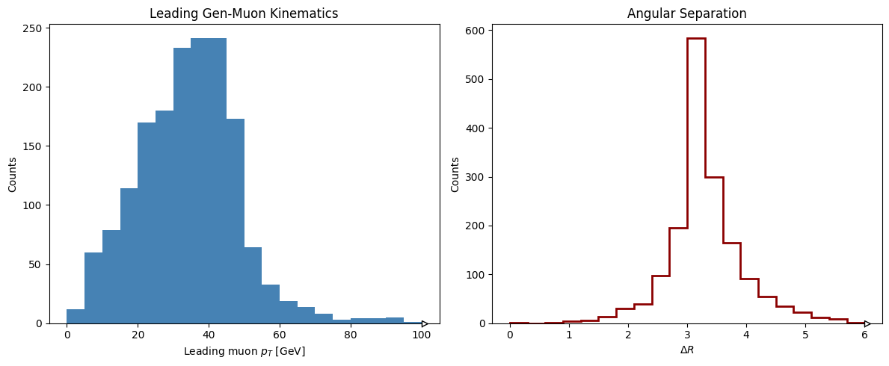
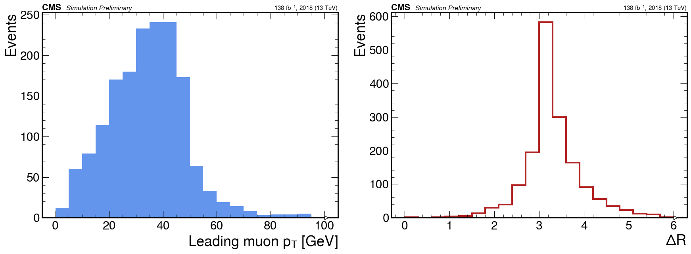

Programmatic API usage
While the command-line interface (CLI) is great for submitting batch jobs, sometimes you want to interact with your data dynamically. YDANA-HEP’s Python API allows you to build and execute your analysis directly from a Jupyter notebook or Python script, giving you the flexibility to iterate quickly and explore your data in real-time.
[ ]:
import dask
import dask_awkward as dak
import hist
import matplotlib.pyplot as plt
# Import YDANA-HEP core tools
from ydana import Config, NTuple
from ydana.base.histos import Histogram
Load the dataset
Load dataset using the NTuple class. By passing root=True, YDANA-HEP uses NanoEventsFactory to read the schema and create a lazy computation graph. Note: No data is actually loaded into memory yet!
[2]:
# Load the configuration (this parses schema.yaml under the hood)
config = Config("yamls/run_config.yaml")
# Create the NTuple reader
dataset = NTuple(CONFIG=config, verbose=False, in_format="root")
# Extract the 'DY' dataset from the events dictionary
events = dataset.events["DY"]
# Let's look at the structure! Dask-awkward knows the schema without loading the data.
print("Fields in the event:", events.fields)
print("Fields in the genmuons collection:", events.genmuons.fields)
Fields in the event: ['digis', 'segments', 'tps', 'genmuons', 'fwshowers', 'simhits', 'number', 'dR']
Fields in the genmuons collection: ['pt', 'eta', 'phi', 'charge', 'pdgId']
Simple example: Array Operations & Cuts
You can check how many events actually contain gen-muons. Because events is a lazy dask_awkward array, you can build the operation first, and then call .compute() to execute it.
[3]:
# 1. Define the mask (True for events with at least one genmuon)
has_muons_mask = dak.num(events.genmuons) > 0
# 2. Apply the mask to the events array
filtered_events = events[has_muons_mask]
# 3. Build the counting tasks
total_events_task = dak.num(events, axis=0)
filtered_events_task = dak.num(filtered_events, axis=0)
# 4. COMPUTE! This is where the actual reading of the ROOT file happens.
total, passed = dask.compute(total_events_task, filtered_events_task)
print(f"Total events: {total}")
print(f"Passed events: {passed}")
Total events: 5000
Passed events: 2153
A bit complex example: Preprocessors & Histograms
Apply a Preprocessor to calculate \(\Delta R\) between the muons.
Define two Histograms using YDANA-HEP’s wrapper.
Fill them lazily and compute everything in one highly-optimized pass.
[4]:
import numpy as np
# --- A. Apply a Preprocessor to the filtered events ---
# In programmatic mode, you can write custom variables on the fly!
def add_genmuon_dR(evts):
has_two = dak.num(evts.genmuons) >= 2
# Pad to ensure there are always at least 2 entries so [:, 0] and [:, 1] don't crash
eta = dak.pad_none(evts.genmuons.eta, 2, axis=1)
phi = dak.pad_none(evts.genmuons.phi, 2, axis=1)
# Calculate dR
d_eta = eta[:, 1] - eta[:, 0]
d_phi = phi[:, 1] - phi[:, 0]
# Handle phi wrap-around
d_phi = dak.where(d_phi > np.pi, d_phi - 2.0 * np.pi, d_phi)
d_phi = dak.where(d_phi < -np.pi, d_phi + 2.0 * np.pi, d_phi)
dR = np.sqrt(d_eta**2 + d_phi**2)
# Assign it as a new field in our lazy array!
evts["dR"] = dak.where(has_two, dR, -999.0)
return evts
# Apply the preprocessor
analysis_events = add_genmuon_dR(filtered_events)
# Ensure we only look at events that actually had 2 muons for the histograms
analysis_events = analysis_events[analysis_events.dR != -999.0]
[5]:
# --- B. Define Histograms ---
# We use the YDANA-HEP Histogram wrapper to map the arrays to the axes
h_pt = Histogram(
hist.axis.Regular(20, 0, 100, name="pt", label=r"Leading muon $p_T$ [GeV]"),
name="LeadingMuon_pt",
func=lambda ev: {"pt": ev["genmuons"]["pt"][:, 0]},
)
h_dR = Histogram(
hist.axis.Regular(20, 0, 6, name="dR", label=r"$\Delta R$ "),
name="muon_DR",
func=lambda ev: {"dR": ev["dR"]},
)
# --- C. Lazily Fill ---
# This just adds the filling operations to the Dask graph.
h_pt.fill(analysis_events)
h_dR.fill(analysis_events)
# --- D. Compute! ---
# Trigger the graph execution. Dask will brilliantly optimize this so it
# only reads the 'genmuons.pt', 'genmuons.eta', and 'genmuons.phi' branches from the ROOT file!
print("Computing histograms...")
filled_pt, filled_dR = dask.compute(h_pt.h, h_dR.h)
print("Done!")
Computing histograms...
Done!
Plotting the Results
Because YDANA-HEP uses the standard hist library under the hood, you have full access to its beautiful matplotlib integrations!
[6]:
# Create a matplotlib figure with 2 subplots
fig, (ax1, ax2) = plt.subplots(1, 2, figsize=(12, 5))
# Plot Leading pT
filled_pt.plot1d(ax=ax1, histtype="fill", color="steelblue", edgecolor="black")
ax1.set_title("Leading Gen-Muon Kinematics")
ax1.set_ylabel("Counts")
# Plot dR
filled_dR.plot1d(ax=ax2, histtype="step", color="darkred", linewidth=2)
ax2.set_title("Angular Separation")
ax2.set_ylabel("Counts")
plt.tight_layout()
plt.show()

5. Publication-Ready Plots with mplhep
The hist objects returned by YDANA-HEP are 100% compatible with mplhep, the community standard for plotting!
You can apply the CMS style and re-plot the histograms.
[7]:
import mplhep as hep
# Apply the official CMS style (changes fonts, tick marks, and layout)
hep.style.use(hep.style.CMS)
fig, (ax1, ax2) = plt.subplots(1, 2, figsize=(18, 7))
# --- Plot 1: Leading pT ---
# hep.histplot natively understands our filled YDANA-HEP histograms!
hep.histplot(filled_pt, ax=ax1, histtype="fill", color="cornflowerblue", edgecolor="black")
# Add the standard CMS branding
hep.cms.label("Preliminary", data=False, lumi=138, year=2018, ax=ax1, fontsize=12)
ax1.set_ylabel("Events")
# --- Plot 2: Delta R ---
hep.histplot(filled_dR, ax=ax2, histtype="step", color="firebrick", linewidth=3)
hep.cms.label("Preliminary", data=False, lumi=138, year=2018, ax=ax2, fontsize=12)
ax2.set_ylabel("Events")
plt.tight_layout()
plt.show()
